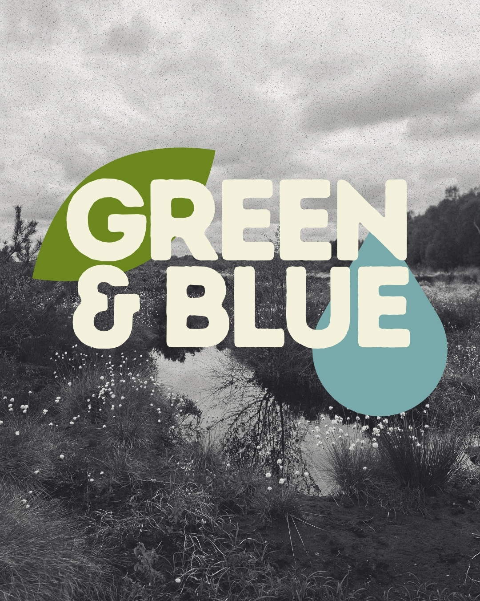

Green&Blue Project Launch Gathering
We’re happy to announce that, with the support of Creative Ireland and Westmeath County Council, we are launching Green&Blue — a community arts and ecology project fostering connections between local communities and the natural ecosystems surrounding them through art and creative participation. Our focus is on the plant life surrounding local waterways: an essential and often overlooked part of the Midlands landscape. Through workshops, sketch-walks, field sessions and collaborative activities, the project invites participants to slow down, observe and develop a deeper relationship with the environments they encounter in everyday life. We’re very excited to invite you to the official launch of Green&Blue 🌿 📅 Tuesday, 26 May 🕖 7pm 📍 Cuige Studios (17–23 Dominick St, Mullingar, N91 E7KC) Join us for an offline gathering to meet in person, celebrate the beginning of the project together and talk about Green&Blue. We’ll introduce some of the artists, ecologists and collaborators involved in the project, share upcoming workshops and activities, speak about the ideas behind Green&Blue, and chat about ways to participate over the coming months. Whether you’re interested in art, biodiversity, local landscapes, sketching, environmental topics or simply want to connect — you are very welcome to join us. Free admission
View on Google Maps →